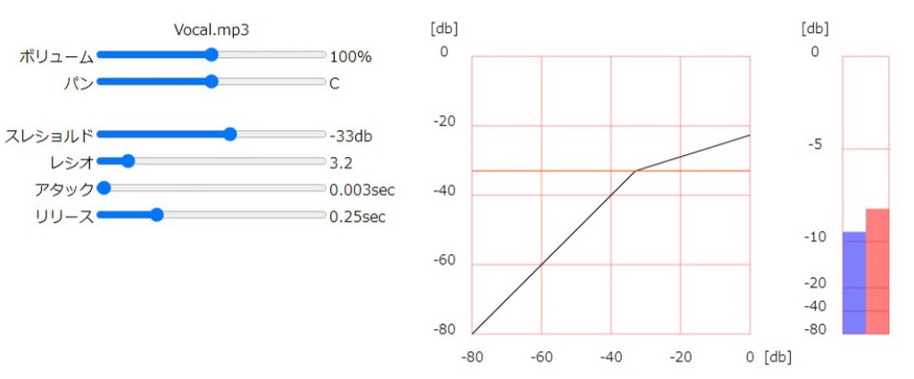

パラメーターと図
コンプレッサーのパラメーターには4つあり、スレショルド、レシオ、アタック、リリースがある。
スレショルドは-80～0dbまで1刻み
レシオは1～20まで0.1刻み
アタックは0～1秒まで0.001刻み
リリースは0.001～1秒まで0.001刻みで調整できます。
左にある図は縦軸が出力音量、横軸が入力音量となっています。
オレンジ色の線がスレショルド、スレショルドより上の線の曲がり具合がレシオを表します。
右にある図は縦軸が音量となっています。
青い線がコンプレッサーを通した後の音量、赤い線がコンプレッサーを通す前の音量を表します。

コンプレッサーの解説
コンプレッサーは、一定の音量を超えたところを小さくして音量のバラつきをなくすエフェクターです。
ミックスダウンにおいてのコンプレッサーは、音量のバラつきをなくし、音圧をあげるために使われます。
※このシミュレータのコンプレッサーは仕様上、音を圧縮した分だけ音量が大きくなります。
各パラメーターの説明をします。
スレショルドは、それ以上超えたら音を小さくする音量を表します。
レシオは、音量がスレショルドを超えたときに、どの程度圧縮するかの割合を決める値です。
アタックは、音量がスレショルドを超えた時にどの程度遅れて音を小さくするかの時間です。
アタック感が大事なドラムなどでは、アタックを遅くすることでアタック感を潰すことなく音量を下げることができます。
アタック感を必要としないギターやシンセサイザーなどでは、アタックを早くすることで、しっかりと音量差を無くし、音圧をあげることができます。
リリースは、音量がスレショルドを下回った時にどの程度遅れて音を小さくするのかをやめるかの時間です。
しっかりと抑揚を出したい場合はリリースを長めにして、ある程度抑揚をつけたい場合はリリースを短めにします。
プリセットの設定について説明します。
ボーカルは、音量のバラつきが少ないため、レシオは浅めにしてある。アタックはしっかりと発声を残すため少しだけ遅らせています。
ドラムは、音量のバラつきが激しいため、レシオは深めにしてしっかりと音量差を無くすようにしてある。アタックはドラムのアタック感を残すため少し遅らせています。
ギターとピアノは、音量のバラつきが少ないため、レシオは浅めにしてある。ギターとピアノは伴奏で余り目立たせないためアタックを早くしてしっかりとアタック感を無くしています。
どのような変化があるのかを確かめてみましょう。
「Bypass」のボタンを押してコンプレッサーの効果をオフにしてみましょう。
その状態で再生してみると、音量差が大きくなり、全体がスカスカな印象になります。
このような状態をコンプレッサーで音量差を無くすことによって、音圧をあげ迫力のある音にすることができます。
トップページに戻る